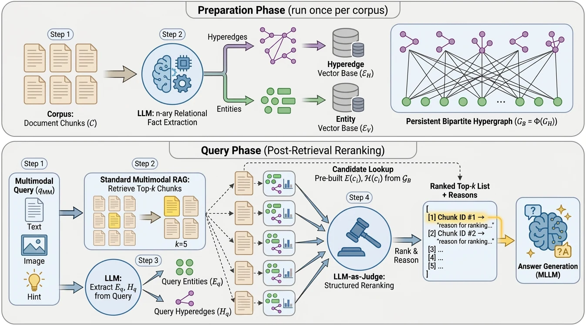

Multimodal RAG often gives the right answer from the wrong evidence. This demo walks one question through my pipeline: vector search finds five candidates, hypergraph facts describe each one, and an LLM judge reads those facts and decides which evidence actually answers the question.
Stage 1 is an independent embedding model, all-MiniLM-L6-v2, that runs entirely in your browser: no account, no server. Stage 2 is the judge, by default the open-source Qwen2.5 model, also running in your browser on the GPU. Add images to the question or to any candidate: a vision model turns them into text first, as in my thesis (images as text, not CLIP).
Press “Rank by similarity” to run the embedding model on the candidates. The first run downloads it once (23 MB).
